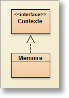
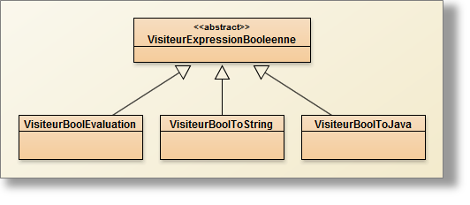

- Le pattern Composite
- Le pattern Visiteur
- le langage WhileL de Hennessy (page 47, chapitre 4.3 an Imperative language)
 Le pattern composite
Le pattern composite
Regrouper dans une hiérarchie des objets (simples, complexes y compris récursifs).

| Informellement | Formilisé en : |
| Une Composante est un Composite ou une Feuille
Composite est composé de 0 ou plusieurs CompositeConcret Feuille est une ‘symbole terminal’ un composite primitif de plus un Composite peut être "récursif i.e. défini en terme de Composante |
Composante ::= Composite | Feuille
Composite ::= {CompositeConcret} Feuille ::= ‘symbole terminal’ ... |

| Expression ::= Binaire | Nombre | Variable
Binaire ::= Addition | Multiplication | Soustraction | Division Addition ::= Expression ‘+’ Expression Multiplication ::= Expression ‘*’ Expression ... Nombre ::= ‘une valeur de type int’ |
Composite des Expressions Arithmétiques entières

Le pattern interpreter/interpréteur
Contexte

public int interprete(Contexte c);
Ceci impose l'implémentation par chaque feuille de la structure de données.
Les choix d'implantation de la classe Mémoire sont fixés, cf. le code java correspondant.
Enfin, une classe de tests unitaires montrent quelques utilisations de l'interprète.
Remarques :
- l'évaluation n'est pas la seule interprétation possible des expressions.
- l'affichage des expressions (infixé, postfixé, préfixé) peut être vu comme une interprétation.
- La simplification (évaluation des sous expressions purement numériques) en est une aussi.
- etc...
- Donc, pour implémenter une nouvelle interprétation il faut "ouvrir" pratiquement toutes les classes de la structure de données avec tous les dangers que cela comporte.
- Alors dans la question1 nous allons utiliser le pattern visiteur pour éviter cette opération.
 Le pattern visitor/visiteur
Le pattern visitor/visiteur
Ainsi la classe Expression devrait s'écrire :
package question1;
public abstract class Expression {
public int accepter(Visiteur v);
}
Pattern visitor

En vous inspirant de la classe VisiteurInfixe qui est complète, complétez les classes VisiteurEvaluation et VisiteurPostfixe et proposez les tests des classes de tests appropriés (cf : classe TestsAFaire), notamment en utilisant des variables.
Remarque :
Toutes les classes feuilles contiennent la même méthode :
public <T> T accepter(VisiteurExpression<T> v){ return v.visite(this); }
Évaluer la question 1 avec JNews.
 Les Expressions Booléennes
Les Expressions Booléennes
Diagramme de Classes à respecter :

- Cette structure de données est complète vous n'avez rien à y ajouter.
- Pas de variables booléennes.
- 2 constantes seulement Vrai et Faux.
- Un seul opérateur unaire : Non.
- Deux sortes d'opérateurs binaires :
- Les opérations booléennes
- Les "Relations" sont des opérateurs entre Expressions Arithmétiques à résultat booléen
Les visiteurs à implanter sont les suivants :

- Pas de visiteur par défaut.
- VisiteurBoolToString correspond au visiteur infixe des Expressions Arithmétiques
- Nouveau visiteur : VisiteurBoolTojava. Il s'agit d'obtenir une expression booléenne syntaxiquement correcte pour java
 Le visiteur "VisiteurBoolTojava"
Le visiteur "VisiteurBoolTojava"
 Le visiteur "VisiteurBoolEvaluation"
Le visiteur "VisiteurBoolEvaluation"
Évaluer la question 2 avec JNews.
 WhileL : un (très) petit langage impératif
WhileL : un (très) petit langage impératif

- L'affectation (= en java) est la seule instruction qui modifie directement le contexte.
- La Séquence est le ';' de java.
- La Sélection est le classique if-then-else (else optionnel)
- Iteration est <<abstract>> car il y a plus d'un type de boucle
- Assertion : même idée que assert de java 1.4
- Afficher : même idée que System.out.println() de java
Les visiteurs proposés sont :
- VisiteurInstToString (fourni)
- VisiteurInstToJava (à développer optionnellement)
- VisiteurInstEvaluation (à développer et rendre) ← Code à écrire

| Spécification informelle :
Rappel : l'exécution d'une instruction modifie l'état d'une Mémoire M, une variable (par exemple X) est une adresse de la Mémoire M |
Spécification formelle : règle d'inférence
cf. livre de Hennessy
Description d'une règle d'inférence : au dessus du trait les hypothèses à assurer |
L'affectation : X=Exp. si avant exécution l'état de la Mémoire est M
après exécution l'état de la Mémoire est M1 i.e. maintenant M[X]=N |
<M>,Exp -visite-> N |
La sélection, si(Bexp)alorsI1 sinon I2 : si avant exécution l'état de la Mémoire est M
après exécution l'état de la Mémoire est M1 ou M2 selon 2. La sélection, si(Bexp)alorsI1: si avant exécution l'état de la Mémoire est M
après exécution l'état de la Mémoire est M1 ou M (inchangée) selon 2. |
<M>,Bexp -visite->
vrai
<M>,Bexp -visite->
faux |
La séquence : I1';'I2 : si avant
exécution l'état de la Mémoire est M
après exécution l'état de la Mémoire est M2. |
<M>,I1 -visite->
<M1> |
la boucle tantque (Bexp) faire I1:
si avant exécution l'état de la Mémoire est M
|
<M>,Bexp -visite->
faux
|
 Complétez les visiteurs "VisiteurInstEvaluation" et "VisiteurInstTojava". Vérifiez que le code obtenu avec "VisiteurInstTojava" est bien syntaxiquement correct pour java. (cf. classe Classejava du paquetage question3) .
Complétez les visiteurs "VisiteurInstEvaluation" et "VisiteurInstTojava". Vérifiez que le code obtenu avec "VisiteurInstTojava" est bien syntaxiquement correct pour java. (cf. classe Classejava du paquetage question3) .Remarques :
- Servez-vous des règles d'évaluation ci-dessus pour implémenter le VisiteurInstEvalution, par exemple n'utilisez pas l'instruction while de java afin d'implémenter le TantQue de WhileL...
- Le visiteur "VisiteurToString" est complet
 La boucle "Pour"
La boucle "Pour"
 Les classes de tests
Les classes de tests
Évaluer la question 3 avec JNews.
Ne pas oublier de rendre/déposer le TP sur JNews.